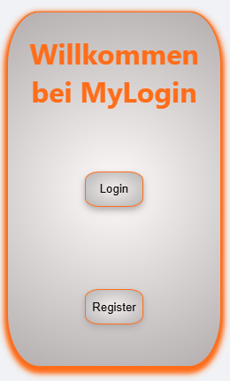

Meine Stärken
Vom ersten Boot-Vorgang zur Leidenschaft für den Code.
Schon früh hat mich die Welt der Computer fasziniert. Was
als Neugier begann – wie Software funktioniert und wie man Dinge
am Bildschirm zum Leben erweckt – hat sich über die Jahre zu einer
echten Passion entwickelt. Heute brenne ich darauf, moderne
Web-Erlebnisse zu erschaffen, die technisch stabil sind und
optisch begeistern.
Mein Herz schlägt für CSS.
AWährend viele
im Fullstack-Bereich das Design eher stiefmütterlich behandeln,
blühe ich hier erst richtig auf. Ich liebe es, mit Layouts, Farben
und Animationen zu spielen, bis jedes Pixel am richtigen Fleck
sitzt. Für mich ist CSS nicht nur Styling – es ist die Sprache,
die eine Anwendung für den Nutzer erst fühlbar macht.
Der nächste Schritt: Fullstack mit Tiefgang.
Ab Mai vertiefe ich mein Wissen in einer intensiven Weiterbildung
zum Fullstack-Entwickler. Mein Ziel? Die Brücke zwischen komplexer
Backend-Logik und intuitiven Frontend-Designs zu perfektionieren.
Ich bringe die Ausdauer eines Autodidakten und die frische Energie
eines Newcomers mit, der bereit ist, moderne Tech-Stacks zu
meistern.
Meine Skills
Fullstack Mindset:
Clean Code Architect:
Logic & Layout:
Mobile First:
CSS Aficionado:
Grid & Flexbox Pro:
mitte
Pixel Perfectionist:
Animation Enthusiast:
Early Tech Adapter:
Problem Solver:
Continuous Learner:
User Centric:
Digital Craftsmanship:
Future Proof Tech:
Performance First:
Creative Developer:
Meine Technologien
„Das Frontend ist für mich mehr als nur Code – es ist die Schnittstelle, an der Technik für den Nutzer sichtbar wird. Meine Basis ist ein tiefes Verständnis für HTML5, um Webseiten strukturell sauber und barrierefrei aufzubauen.
Mein absolutes Steckenpferd ist CSS3. Hier bewege ich mich auf fortgeschrittenem Niveau und liebe es, mit Grid, Flexbox und modernen Animationen Interfaces zu kreieren, die nicht nur funktionieren, sondern begeistern.
In der Logik-Ebene mit JavaScript (ES6+) mache ich aktuell meine ersten großen Schritte. Ich beherrsche die Grundlagen und lerne täglich dazu, um statische Designs in interaktive Erlebnisse zu verwandeln. Meine Weiterbildung ab Mai wird hier der Turbo-Boost sein, um meine JS-Skills auf das nächste Level zu heben.“
„Mit React schlage ich die Brücke zwischen meinem Design-Anspruch und funktionaler Logik. Ich lerne aktuell, Webseiten in modulare, wiederverwendbare Komponenten zu unterteilen, um skalierbare und performante Single Page Applications (SPAs) zu bauen.
Du kannst mich mit dem Mouse Wheel Scrollen
Code in Action: Meine Projekte & GitHub-Insights
